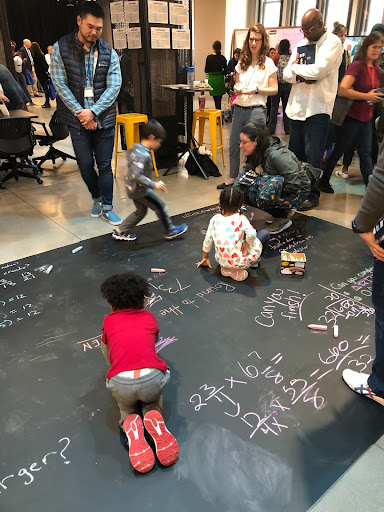
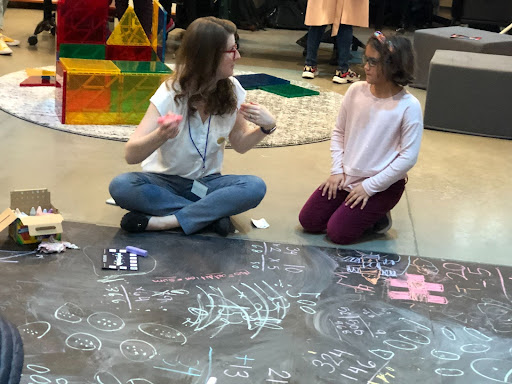
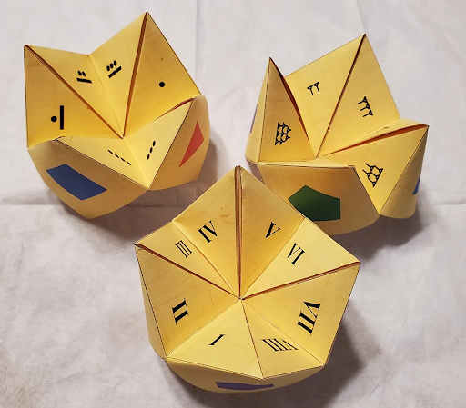

Multicultural Math Gallery Walkthrough will feature an array of Multicultural MathSpaces and mathematicians from underrepresented demographics.
This curation was hand selected by our students in the Program of Mathematics Education at Teachers College.
The mathematical spaces featured were selected for their design that can simulate effective education of a multicultural student body. We define MathSpaces as any space, physical or virtual, where mathematics learning, socialization, and/or identity development occurs.
Join us for an engaging gallery walk-through and see some of our favorite mathematicians and what a Multicultural MathSpace can look like. Note among our featured mathematicians are mathematicians showcased in the popular film Hidden Figures.
Link to virtual Multicultural MathSpaces event from Fall 2020.
Sidewalk Math is about bringing the fun play of sidewalk chalk art to cultivating an inclusive MathSpace for all. Sidewalk Math is a powerful space that stimulates wonder, meaningful hands on learning, and engagement across all ages. Sidewalk Math is great for mathematics learning and community building. It is trending as an affordable, creative, and inspiring interactive space that can happen at your front steps. The wider mathematics education community has been engaging with #sidewalkmath, and we would love you to join us and play!
 Numeral Systems are richly connected to the culture of a people. Come play with these fun cootie catchers featuring several numeral systems. The art of folding papers is known as origami. Origami has a rich history in solving many important mathematical questions.
